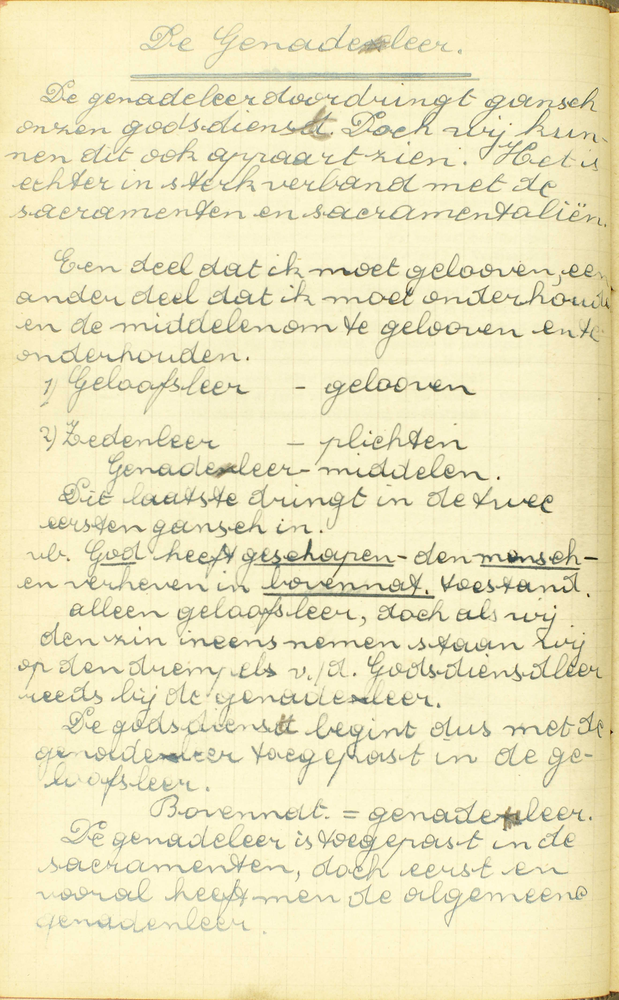
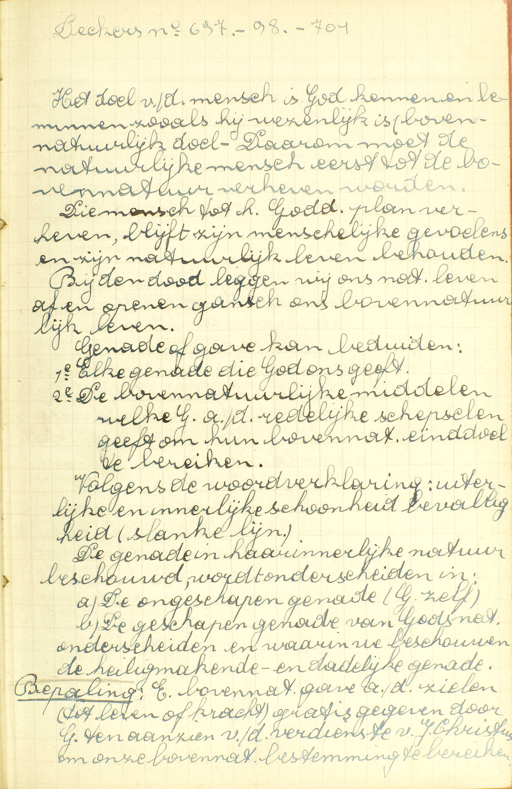
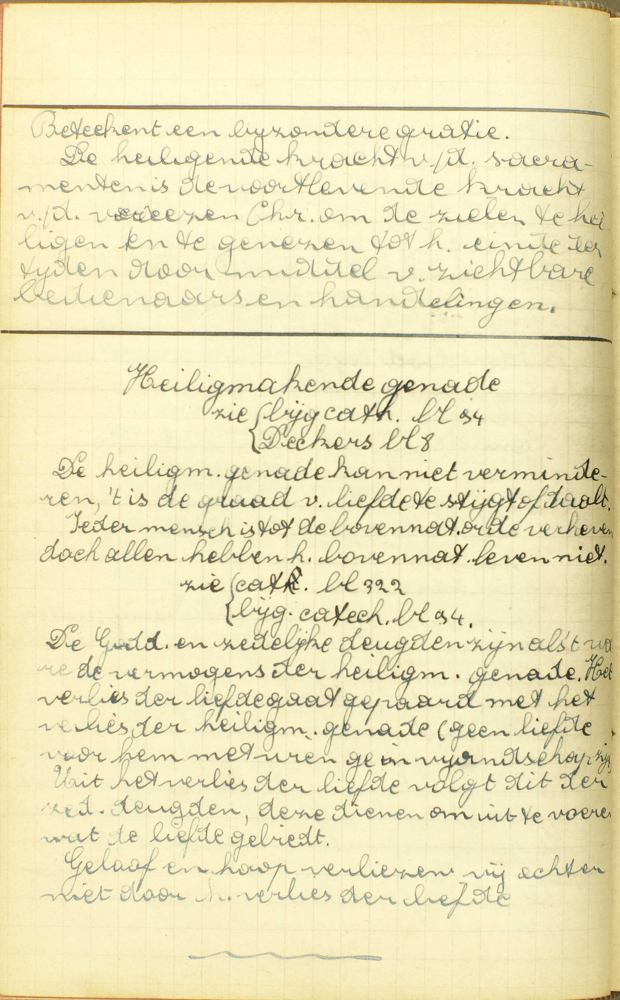
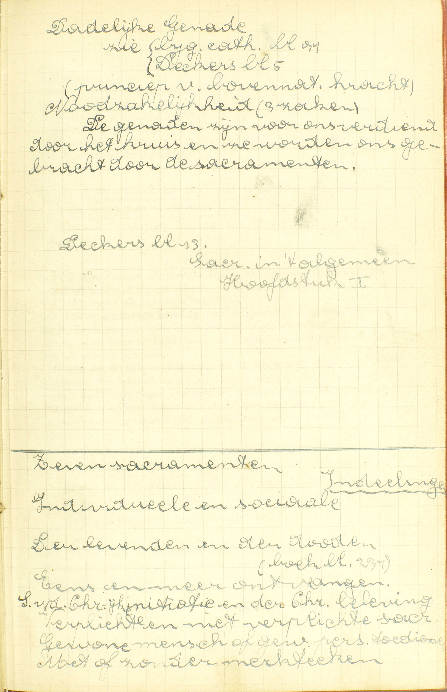
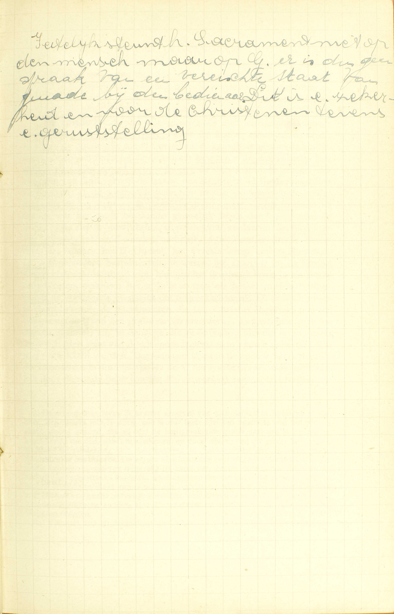
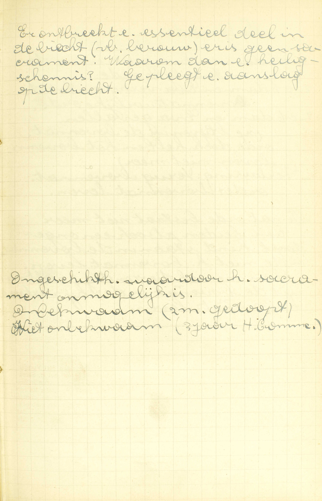
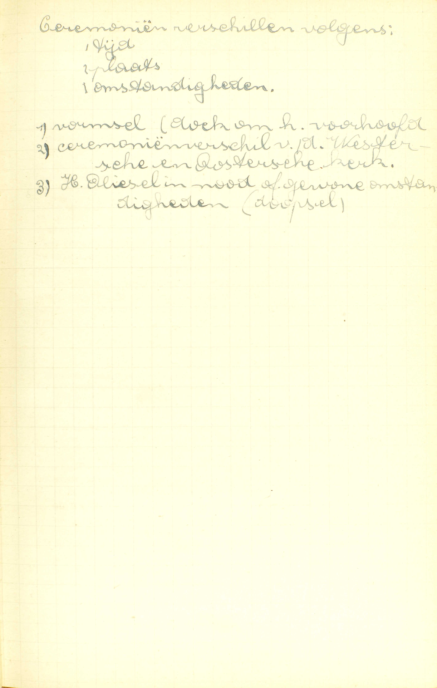
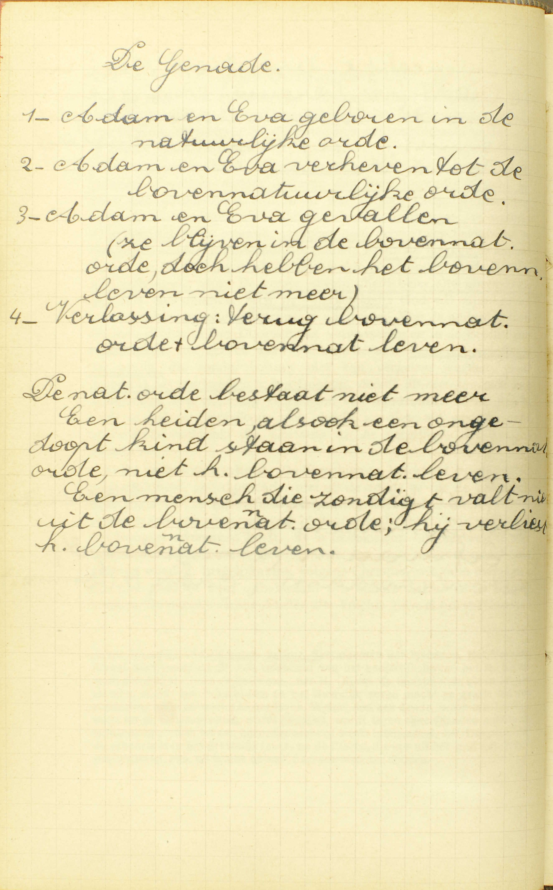

BEKNOPTE VERKLARING
van de
MECHELSE CATECHISMUS
ten gebruike van het middelbaar onderwijs
VIERDE DEEL
–
NEGEN EN TWINTIGSTE LES
Van de HH. Sacramenten
| Natuur | Wat is een Sacrament? | |||
| Getal en naam | Hoeveel Sacramenten zijn er? | |||
| Zeg de Zeven Sacramenten | ||||
| Waaruit hebben wij, dat er zeven Sacramenten zijn, noch minder noch meer? | ||||
| Verdere uitlegging van de natuur van de Sacramenten | Bediening | Welke intentie of mening is de dienaar van node in het bedienen van de Heilige Sacramenten? | ||
| Beletsels van hun kracht | Wordt de kracht van de Sacramenten ergens door belet? | |||
| Gebruik | Mogen alle Sacramenten dikwijls ontvangen worden? | |||
| Ceremoniën | Zijn de ceremoniën nodig tot de Sacramenten? | |||
 De genadeleer doordringt gans onze godsdienst. Doch wij kunnen dit ook apart zien. Het is echter in sterk verband met de sacramenten en sacramentaliëen. Een deel dat ik moet geloven, een ander deel dat ik moet onderhouden, en de middelen om te geloven en te onderhouden. […] De godsdienst begint dus met de genadeleer toegepast in de geloofsleer.  Het doel van de mens is God kennen en beminnen zoals hij wezenlijk is (bovennatuurlijk doel). Daarom moet de natuurlijke mens eerst tot de bovennatuur verheven worden.
Die mens tot het Goddelijk plan verheven, blijft zijn natuurlijk leven behouden. Bij de dood leggen wi ons natuurlijk leven af en openen gans ons bovennatuurlijk leven.
Genadegave kan beduiden: 1ᵉ Elke genade die God ons geeft. 2ᵉ De bovennatuurlijke middelen welke God aan de redelijke schepselen geeft om hun bovennatuurlijk einddoel te bereiken.  De heiligende kracht van de sacramenten is de voortlevende kracht van de verrezen Christus om de zielen te heiligen en te genezen tot het einde der tijden door middel van zichtbare bedienaars en handelingen.
De heiligmakende genade kan niet verminderen, ’t is de graad van liefde die stijgt of daalt. Ieder mens is tot de bovennatuurlijke orde verheven, doch allen hebben het bovennatuurlijk leven niet. De Goddelijke en zedelijke deugden zijn als ’t ware de vermogens van de heiligen. Het verlies van de heiligmakende genade (geen liefde) voor hem met wie ge in vijandschap zijt. Uit het verlies van de liefde volgt dit van de zedelijke deugden, deze dienen om uit te voeren wat de liefde gebiedt. Geloof en hoop verliezen wij echter niet door het verlies van de liefde. Na gesproken te hebben van het Geloof, de Hoop en de Liefde, zal de Catechismus handelen van de HH. Sacramenten of van de uitwendige middelen, door Christus ingesteld ten einde ons de hoedanigheden en krachten te verschaffen die wij nodig hebben om in God te geloven, op Hem te hopen en Hem te beminnen. gelijk onze zaligheid het vereist.
Wat is een Sacrament?
Een uitwendig teken, van Christus ingesteld, betekenend een bijzondere genade, die ons door hetzelve gegeven wordt
V. Waarin bestaat een Sacrament van de Nieuwe Wet? — Sacrament betekent eigenlijk niets anders dan heilige zaak, iets dat de godsdienst is toegewijd; maar, van in het begin van de Kerk is dit woord algemeen aangenomen in de zin van het hier gegeven antwoord.
A. Tot een Sacrament zijn vier dingen vereist:
1° Een uitwendig teken: een teken is iets dat ons tot de kennis brengt van een andere zaak (2ᵉ les, 3ᵉ v.); een uitwendig teken is een teken dat wij met onze zinnen kunnen waarnemen. Zo is het kostuum van de priesters een teken, omdat het ons de priesterlijke waardigheid doet kennen van de personen die het dragen; het is een uitwendig teken, omdat wij het met onze ogen zien.
2ᵉ Een uitwendig teken — van Christus ingesteld: van Christus, onze Zaligmaker tot een zekere betekenis aangenomen. Waarom: een Sacrament van Christus zelf moet ingesteld zijn, zal aanstonds blijken.
3ᵉ Een uitwendig teken… betekenende een bijzondere genade die gegeven wordt. Hetgene een Sacrament ons doet kennen, is dus een genade die daar gegeven wordt, en niet een onbepaalde, maar een bijzondere, een bijzondere en bepaalde, voor elk Sacrament verschillende genade. Zo drukt b.v. de absolutie van de priester in de Biecht een genade uit die daar gegeven wordt, en wel een bijzondere, namelijk, de vergiffenis van de zonden die na het doopsel bedreven zijn. Ook de H. Communie betekent een bijzondere genade, maar een andere die haar eigen is, te weten, de geestelijke spijzing van de ziel.
Onder de naam van genade komt hier: a) de heiligmakende genade, zijnde, samen met de haar altijd vergezellende bovennatuurlijke deugden en gaven van de H. Geest (39ᵉ les, vr. 2), een bijblijvende hoedanigheid en geschiktheid van de ziel die ons, op een wijze welke aan niet één schepsel toebehoort, aan het verstandelijk leven (aan de wetenschap en de heiligheid) Gods deelachtig en zo heilig maakt, en ons van de staat van enkele dienaren tot de waardigheid van kinderen Gods en erfgenamen van de hemel verheft; — b) de dadelijke genade, bestaande in een voorbijgaande bovennatuurlijke verlichting van het verstand en een dergelijke beweging van de wil, die beide ons tot het goed aandrijven, ons helpen in dit te willen en ten uitvoer te brengen. Zij wordt gegeven voor een werk, voor een daad in ’t bijzonder, duurt bijgevolg niet langer dan dit werk, dan die daad: vandaar haar naam van werkelijke of dadelijke genade; — c) het merkteken dat enige Sacramenten in de ziel prenten, en dat gelegen is in een geestelijke en bijgevolg onzichtbare hoedanigheid die ons wel niet, gelijk de deugd, genegen maakt tot het goed, maar bijzonder bekwaam om de Sacramenten te hedienen of te ontvangen, en ons zo onderscheidt van alle andere mensen die deze hoedanigheid niet hebben. Het merkteken mag zeer wel onder de naam van genade, genomen in wijderen zin, verstaan worden, vermits het een bovennatuurlijke gave is, en recht geeft tot dadelijke genaden die aan zijn bestemming beantwoorden.
4° Een uitwendig teken… hetekenende een bijzondere genade die ons door hetzelve (door dat teken) gegeven wordt. Om een Sacrament van de Nieuwe Wet te wezen, moet dus het uitwendig teken van Christus ingesteld niet enkel een bijzondere genade betekenen, maar nog door zichzelf en afgezien van de verdiensten des bedienaars of van degenen, die het ontvangen, de kracht hebhen van God te bewegen om ons de betekende genade in de ziel te storten. Christus’ Sacramenten hebben die kracht, daar zij in zijn naam bediend en dusvolgens als zijn werken moeten beschouwd worden. Kwam Hij zelf een Sacrament toedienen, voorzeker zou dit, uit hoofde van de goddelijke waardigheid van zijn bedienaars, de kracht hebben om God tot het geven van de betekende genade te bewegen; maar of Christus dit door zichzelf doet, of door zijn afgezant, dat komt overeen uit. Thans is het ook gemakkelijk om verstaan dat de Sacramenten, om genoemde kracht te hebben, van Christus moeten ingesteld zijn.
Uit het voorgaande blijkt dat het Kruisteken geen Sacrament is: het beantwoordt aan de eerste voorwaarde, zeer waarschijnlijk aan de tweede. maar niet aan de derde noch aan de vierde: het is niet ingesteld om een bijzondere genade te betekenen, noch om zulke door zichzelf te geven; zijn uitwerksel hangt helen gans af van het goed werk dat wij er door Gods genade mee doen. Evenmin was het doopsel van de H. Joannes Baptista een Sacrament: wel was het een uitwendig teken, namelijk van boetvaardigheid, maar het voldeed aan geen van de drie overige voorwaarden: de vergiffenis van de zonden die men daarhij verkreeg, moet niet aan de kracht van het doopsel, maar wel aan het leedwezen van de doopelingen toegeschreven worden. Ons H. Doopsel echter is een waar Sacrament: het bestaat a) in een uitwendig teken, namelijk, de uitwendige reiniging en de aanroeping van de H. Drievuldigheid; b) dit uitwendig teken is, volgens de getuigenis van het H. Evangelie, door Christus ingesteld, en dat c) om een bijzondere genade te betekenen die daar gegeven wordt, te weten, de vergiffenis van de erfzonde en van alle voorgaande zonden. en d) om die genade door zichzelf en afgezien van de verdiensten des doopers of van de doopelingen in de ziel te storten; iedereen immers kan ze ontvangen, al was de dooper in staat van doodzonde, en een klein kind, al is het buiten staat iets te verdienen.
Hoeveel Sacramenten zijn er?
Zeven
A. Er bestaan dus zeven verschillende uitwendige tekenen van Christus ingesteld om een bijzondere genade te betekenen en door zichzelf te geven.
Christus kon ons ook zonder de Sacramenten zijn genade mededelen; doch in zijn opperste wijsheid heeft Hij ze daartoe willen instellen: 1° om aldus de zo nodigen uitwendigen godsdienst te bevorderen; 2° om ous meerdere zekerheid te geven nopens het ontvangen van de genade; 3° om ons daardoor vele deugden te doen oefenen zoals het geloof, de godsdienstigheid, de ootmoedigheid, de sterkte, vooral die tegen het menselijk opzicht; 4° om ons beter te leren wat de Sacramenten in ons uitwerken, en 5° om door hun gebruik de gelovigen in een geestelijke gemeente, in een kerk te verenige.
Zeg de Zeven Sacramenten
1. Het Doopsel. 2. Het Vormsel. 3. Het Heilig Sacrament des Altaars. 4. De Biecht. 5. Het Heilig Oliesel. 6. Het Priesterschap. 7. Het Huwelijk
 Dadelijke genade A. Door de Zeven HH. Sacramenten heeft Christus ten volle in al de behoeften van het geestelijk leven voorzien: dit leven immers is ingericht in overeenkomst met het lichamelijk leven. Bijgevolg, ook onder opzicht van het geestelijk leven, moeten wij eerst en vooral geboren worden of het leven ontvangen: hiertoe dient het H. Doopsel; ten tweede, opgroeien en dat leven ten volle bekomen: dit geschiedt door het Vormsel; ten derde, spijs gebruiken om ons leven te bewaren: die spijs vinden wij in het H. Sacrament des Altaars; ten vierde een geneesmiddel hebben tegen de ziekte van de zonden: zulk een geneesmiddel is het H. Sacrament van de Biecht; ten vijfde, bijzonderen onderstand krijgen in het uur van de dood: die verschaft ons het H. Oliesel; ten zesde, in gemeenschap zijn met andere mensen, met hen een maatschappij, een Kerk uitmaken, en bijgevolg onder het gezag en het bestuur van oversten staan: deze oversten worden gezalfd in het H. Sacrament van het Priesterschap; eindelijk ten zevende, moet in de duur van de H. Kerk voorzien worden, nieuwe gelovigen dus moeten de plaats innemen van degenen die afsterven: daartoe heeft Christus het Huwelijk ingesteld.
Waaruit hebben wij, dat er zeven Sacramenten zijn, noch minder noch meer?
Uit de gedurige leer en Overlevering van de H. Kerk
V. Waaruit weten wij met zekerheid, dat Christus zeven verschillende Sacramenten ingesteld heeft, noch minder noch meer?
A. Wij weten dat met volle zekerheid:
1° Uit de gedurige leer: uit de gestadige voorhouding van de H. Kerk, die de naaste en de levende regel is van ons Geloof, die ons op een levende, beslissende en verplichtende wijze voorhoudt wat wij moeten geloven:
2° Uit de Overlevering van de H. Kerk: uit die schat van de goddelijke Openbaring die de Overlevering genoemd wordt, en, evenals de H. Schrift, een verdere, een dode regel van het Geloof is. Van de H. Schrift maakt de Catechismus hier geen gewag, omdat zij nopens het getal van de HH. Sacramenten geen volledige leer bevat.
Welke intentie of mening is de dienaar van node in het bedienen van de Heilige Sacramenten?
Een oprechte mening om te doen hetgene dat Christus ingesteld heeft, of dat de H. Kerk doet
 Feitelijk steunt het Sacrament niet op de mens, maar op God. Er is dus geen sprake van een vereiste staat van genade bij de bedienaar. Dit is een zekerheid en voor de christenen tevens een gerutstelling. V. Is het, voor de geldigheid van een Sacrament, gelijk met welk inzicht de bedienaar gebruik maakt van het uitwendig teken door Christus ingesteld, al was het alleen uit lach of spotlust, of uit veinzerij, ofwel moet hij een bepaalde mening hebben, en, zo ja, dewelke?
A. Het is geenszins gelijk met welk inzicht hij een Sacrament bedient: hij moet hebben — de mening om te doen hetgene dat Christus ingesteld heeft, of dat de H. Kerk doet: het inzicht van het uitwendig teken waar het Sacrament in bestaat, tot dit einde te gebruiken, waar het van Christus toe ingesteldis en van de H. Kerk toe aangewend wordt, en die mening moet — een oprechte: een inwendige en wezenlijke zijn. Hierbij dient aangemerkt te worden: 1° dat hetgeen Christus ingesteld heeft en hetgeen de H. Kerk doet, één en hetzelfde is, daar de ware Kerk het waarachtig gebruik van de HH. Sacramenten hebben moet; 2° dat men, om met het vereiste inzicht te werk te gaan, geenszins duidelijk moet weten, wie Christus en welke de ware Kerk is, noch welke de uitwerksels van het Sacrament zijn.
De noodzakelijkheid van dusdanige mening blijkt niet alleen uit de stelligen wil van Christus, ons door de Overlevering bekend gemaakt, maar nog uit de natuur van de Sacramenten; immers de uitwendige tekenen er van kunnen met allerlei inzichten gebruikt worden, en dienen daarom niet altijd en in alls gevallen bronnen van genade te zijn. Daarenboven, de bedienaars van de Sacramenten zijn Christus’ afgezanten of plaatsvervangers, en een afgezant of plaatsvervanger kan ín van zijn meesters naam niets doen zonder het inzicht te hebben van als zulke te handelen.
Wordt de kracht van de Sacramenten ergens door belet?
Ja, door de zonden, de geveinsdheid en onbekwaamheid van degenen die ze ontvangen
 Er ontbreekt een essentieel deel in de biecht (bv. berouw). Er is dan geen sacrament. Waarom dan een heiligschennis? Ge pleegt een aanslag op de biecht. V. Als de Sacramenten door wettige bedienaars, met het teken, van Christus ingesteld, en met de vereiste mening toegediend worden, kan dan nog hun kracht om de betekende genade uit zichzelf te geven door enige beletselen verhinderd of tegengehouden worden, zoodanig dat die kracht haar uitwerksel niet heeft?
A. Ja, door drie beletselen: 1° door de zonden, 2° de geveinsdheid en 3° de onbekwaamheid — van degenen die ze ontvangen. Van de kant van de bedienaar kunnen geen beletselen bestaan, indien hij de Sacramenten geldig bedient, d.i. indien hij de daartoe nodige macht bezit, het van Christus ingestelde teken gebruikt en de vereiste mening heeft. De staat van doodzonde waar hij zich in bevinden kan, vermag niet de kracht van de Sacramenten te beletten, daar hun uitwerksels niet afhangen van zijn verdiensten, maar van die van Christus, wiens plaats hij bekleedt.
1° De zonde houdt niet alle uitwerksels van de Sacramenten tegen: a) zij belet nooit het merkteken, want dit kan er mee samenstaan; b) alleen de dodelijke zonde kan geheel en gans de genade (de heiligmakende en het recht tot de dadelijke) beletten; de dagelijkse kan slechts de genadegraad verminderen; de eerste immers maakt ons vijanden van God, terwijl de laatste ons slechts in de liefde Gods doet verflauwen; c) de doodzonde belet niet in alle Sacramenten de heiligmakende en het recht tot de dadelijke genade, maar slechts in deze die dienen om het reeds bestaande geestelijk leven van de heiligmakende genade in de ziel te ontwikkelen, te voltrekken, en daarom Sacramenten der levenden genoemd worden, namelijk, in het Vormsel, het H. Sacrament des Altaars, het H. Oliesel, het Priesterschap en het Huwelijk. In de twee andere Sacramenten, te weten, het Doopsel en de Biecht, die rechtstreeks bestemd zijn, niet om het geestelijk leven in de ziel te ontwikkelen, maar om het er in te storten als het er niet in bestaat, houdt de doodzonde geenszins dat uitwerksel tegen. De reden hiervan is klaarblijkend: de Sacramenten die van Christus ingesteld zijn om het geestelijk leven van de genade te vermeerderen, kunnen hier niet toe dienen, wanneer zij, in dengene die ze ontvangt, niet dat leven, maar de dood (den staat van doodzonde) tegenkomen: wat niet bestaat, kan niet ontwikkeld worden. Daarentegen kunnen de andere Sacramenten, die ingesteld zijn om ons van de dood van de zonde te verlossen, onmogelijk door de zonde belet worden dit uitwerksel teweeg te brengen. Het is zelfs waarschijnlijk dat de kracht van de Sacramenten van de levenden er niet door wordt tegengehouden, en dat men er vergiffenis van bekomt, als men die Sacramenten met een onvolmaakt leedwezen te goeder trouw ontvangt.
Daar men door leven de kracht verstaat van zichzelf te bewegen of van door zichzelf iets te doen, zo wordt onze ziel ten opzichte van het eeuwig geluk levend gezegd, als zij met de heiligmakende genade versierd is, en zo de kracht bezit om de hemel te verdienen, en dood als zij van die genade beroofd is. Van daar de verdeling van de Sacramenten in Sacramenten van de levenden en in Sacramenten van de doden. De eerste zijn bestemd voor degenen die het leven van de genade hebben, en moeten bijgevolg in staat van genade ontvangen worden: de andere zijn rechtstreeks ingesteld voor degenen die van dat leven beroofd zijn, en mogen daarom in staat van doodzonde ontvangen worden: zij mogen nochtans ook in staat van genade ontvangen worden, omdat men er vergiffenis door bekomt van de dagelijkse zonden, alsook vimmdat één en dezelfde zonde meermaals kan vergeven worden.
Het Vormsel, het H. Sacrament des Altaars, het H. Oliesel, het Priesterschap en het Huwelijk zijn, uit hun natuur Sacramenten van de levenden. Het Vormsel brengt ons immers tot de volwassenteid van het geestelijk leven; het H. Sacrament des Altaars is er de spijs van; het H. Oliesel de bijzondere steun in de laatsten strijd: het Priesterdom en het Huwelijk geven macht en genade tot een bijzonder ambt en werk van dat leven. Welnu, niet een dode, maar een levende komt tot de volwassenheid, wordt gespijsd, wordt tegen zijn vijanden geholpen, wordt aangenomen tot een bijzonder ambt of werk. Integendeel, het Doopsel, dat de geboorte is in het geestelijk leven, en de Biecht, die ons uit het graf van de zonde doet opstaan, zijn, uit hun natuur Sacramenten van de doden,
2° De geveinsdheid. Veinzen is zich uitwendig door woorden, gebaren of werken anders uitgeven dan men inwendig gesteld is. Hier kan geveinsdheid zijn in al wat volgens Christus’ instelling vereist is bij degenen die de Sacramenten ontvangen, te weten: a) in de wil of de intentie, wanneer men gebaart een Sacrament te ontvangen zonder dat inwendig te willen; b) in de werken, wanneer deze, b.v. het berouw en de belijdenis van de doodzonden in de Biecht, niet rechtzinnig zijn. De eerste geveinsdheid belet alle uitwerksels van de HH. Sacramenten, zelfs het merkteken: God wil zijn gaven niet schenken aan wie weigert ze te ontvangen. Wat de andere betreft, die men slechts in het Doopsel van volwassenen en in de Biecht kan tegenkomen, het gebrek aan voldoend berouw belet de vergiffenis van de zonde, die zonder berouw niet kan vergeven worden, maar geenszins het merkteken in het Doopsel, daar dit met de zonde kan samenstaan. Het vrijwillig verzwijgen van doodzonden in de Biecht belet er ook de vergiffenis van daar er dientengevolge een voorwaarde ontbreekt die Christus tot de vergiffenis van de zonden gesteld heeft,
3° De onbekwaamheid. De Catechismus betekent hiermede de ongeschiktheid, voortkomende, niet uit de zonde of uit de geveinsdheid, maar uit de bijzondere bestemming van de Sacramenten tot een zekere klasse van personen waar men niet toe behoort. Wie b.v. eens het Doopsel ontvangen heeft, die is onbekwaam om het nog te ontvangen, omdat Christus gewild heeft dat men maar eenmaal zou gedoopt worden. Insgelijks zijn, volgens Christus’ wil, alle mensen die niet gedoopt zijn, onbekwaam om andere Sacramenten te ontvangen. De onbekwaamheid belet alle kracht, zowel het merkteken als de genade, daar de Sacramenten enkel dat kunnen uitwerken, waartoe zij door Christus ingesteld zijn.
Heeft een Sacrament zijn kracht niet kunnen uitwerken om reden van onbekwaamheid of van gebrek aan wil in degenen die het ontvingen, dan kan het nimmermeer herleven of zijn uitwerksel hebben, vermits het dan geenszins heeft bestaan. Buiten deze gevallen is het bijna zeker dat het Doopsel, en zeer waarschijnlijk dat het Vormsel en het Priesterdom kunnen herleven, omdat die Sacramenten maar ééns mogen ontvangen worden. Om dezelfde reden denken dat velen ook van het H. Oliesel, gedurende dezelfde ziekte, en van het Huwelijk, onder dezelfde gehuwden.
Mogen alle Sacramenten dikwijls ontvangen worden?
Neen; want het Doopsel, Vormsel en Priesterdom, omdat zij een zeker en altijddurend teken in de ziel prenten, mag men maar ééns ontvangen; maar de andere vier mogen naar gelegenheid tot verscheidene reizen gebruikt worden
V. Mogen de Zeven Sacramenten zonder onderscheid herhaaldelijk gebruikt worden?
A. Neen, dat is niet toegelaten: het Doopsel, Vormsel en Priesterdom — mag men maar ééns ontvangen: mag men nimmermeer ontvangen, als men ze eens zonder beletsel tegen het merkteken ontvangen heeft; want zij prenten in de ziel een teken (1ᵉ vr.), en wel een zeker, d.i. een vast, klaar en duidelijk, en altijddurend, d. i. onuitdoenlijk en bijgevolg niet, gelijk de heiligmakende genade, verliesbaar en voor vermeerdering vatbaar, maar altijd en onveranderlijk hetzelfde; het ware dus nutteloos ze meermaals te ontvangen. En men zegge niet dat men dit zou mogen doen, om vermeerdering te bekomen van de heiligmakende genade of van het recht op dadelijke, want daartoe dienen de andere vier Sacramenten die, naar gelegenheid of als de vereisten er voor vervuld zijn, tot verscheidene reizen (herhaaldelijk) mogen gebruikt worden. Zo b.v. mag men alle dagen ééns het H. Sacrament des Altaars ontvangen, als men genoegzaam onderwezen is en nuchter en zuiver van zonden.
De reden waarom het Doopsel, Vormsel en Priesterdom de eigenschap hebben van een merkteken in de ziel te prenten, is licht om begrijpen: die drie Sacramenten verdelen de gelovigen uitwendig in drie klassen: in intredende, in volwassene en in besturende leden; maar daar de H. Kerk, niet enkel een uitwendige vergadering is, maar ook en wel eerst en vooral een inwendige of geestelijke — welke God door het instorten van zijn bovennatuurlijke gaven te weeg hrengt — zo dienden zij diezelfde verdeling ook inwendig in de zielen uit te werken. Het merkteken van het Doopsel maakt ons leden van de H. Kerk en geeft ons bekwaamheid om al de andere Sacramenten te ontvangen; dat van het Vormsel maakt ons volwassene leden van de H. Kerk en stelt ons in staat om als zulke te leven en te handelen; dat van het Priesterdom maakt ons vaders van de gelovigen en vergunt macht om de HH. Sacramenten te bedienen.
Zijn de ceremoniën nodig tot de Sacramenten?
Neen, want de Sacramenten bestaan ook zonder de ceremoniën, maar deze dienen om die met meerder eer aan te dienen, en de kracht van dezelve ons voor ogen te stellen
 Ceremoniën verschillen volgens tijd, plaats en omstandigheden. V. Zijn de ceremoniën: zekere uitwendige gebeden en godsdienstige tekenen die de H. Kerk bij het bedienen van de HH. Sacramenten voorschrijft, nodig tot de Sacramenten, zoodanig dat deze zonder die ceremoniën niet kunnen bestaan of hun kracht uitwerken?
A. Neen, daartoe zijn zij niet nodig, want de Sacramenten — bestaan ook zonder de ceremoniën: hebben alles wat tot hun wezen vereist is, en werken hun kracht uit dan ook als zij zonder ceremoniën bediend worden; im mers hun bestaan en hun kracht hangen alleen van Christus’ instelling af; — maar deze dienen 1° om die met meerder eer aan te dienen: om meer en meer uit te drukken welke kostelijke zaken het zijn, en 2° om de kracht van dezelve ons voor ogen te stellen: om er beter de uitwerksels van te doen uitschijnen. Werden de Sacramenten gegeven gelijk Christus ze ingesteld heeft, werd b.v. het Doopsel, de H. Communie, het Priesterdom even toegediend, deze toediening zou klaarblijkend met veel minder eer geschieden, en de gelovigen minder wel begrijpen, wat zij daar ontvangen.
Aanmerking
 De genade. 1 - Adam en Eva geboren in de natuurlijke orde. 2 - Adam en Evan verheven tot de bovennatuurlijke orde. 3 - Adam en Eva gevallen (ze blijven in de bovennatuurlijke orde, doch hebben het bovennatuurlijke leven niet meer). 4 - Verlossing: terug bovennatuurlijke orde + bovennatuurlijk leven. De natuurlijke orde bestaat niet meer. Een heiden, alsook een ongedoopt kind staan in de bovennatuurlijke orde, niet het bovennatuurlijk leven. Een mens die zondigt valt niet uit de bovennatuurlijke orde; hij verliest het bovennatuurlijk leven. Geheel de leer nopens de HH. Sacramenten vloeit uit hun natuur voort. Om ze geldig te bedienen, moet de bedienaar 1° het teken gebruiken door Christus ingesteld, daar zij uit Christus’ instelling al hun kracht trekken; 2° willen doen wat Christus ingesteld heeft of de H. Kerk doet, aangezien dat Christus het zo gewild heeft, en dat de bedienaar als zijn afgezant moet handelen. — Een geldig bediend Sacrament kan, vanwege degenen die het ontvangen, belet worden zijn kracht uit te werken 1° door de zonden, als en omdat zijn uitwerksel bestaat, niet in de zonde te vergeven, maar in de staat van genade te vermeerderen; 2° door de geveinsdheid, want, waar men deze aantreft, worden de voorwaarden die Christus gesteld heeft, niet meer vervuld; 3° door de onbekwaamheid, daar de kracht van de Sacramenten door hun bestemming bepaald wordt. — De HH. Sacramenten mogen óf slechts ééns, óf meermaals ontvangen worden, volgens dat hun voornaamste uitwerksel onveranderlijk blijft bestaan, ofwel verloren of vermeerderd kan worden. — Zij kunnen zonder ceremoniën bestaan, vermits hun kracht geheel van Christus’ instelling afhangt.
VRAGEN
Waarover handelt het vierde deel van de Catechismus? — Geef het verband van het vierde deel met de drie voorgaande.
Wat betekent het woord Sacrament uit zijn natuur, en in welke betekenis is het door de H. Kerk van in het begin aangenomen? — Welk is de zin van de vraag: wat is een Sacrament? — Hoeveel en welke dingen zijn tot een Sacrament vereist? — Leg de woorden een uitwendig teken uit, en verklaar deze uitlegging door een voorbeeld. — Van wie zijn de Sacramenten ingesteld? — Welk is de betekenis van het uitwendig teken van de Sacramenten? — Waarom zegt de Catechismus niet alteenlijk genade, maar bijzondere genade? — Wat komt hier onder de naam van genade? — Zeg ìn ’t kort wat men verstaat door heiligmakende genade — door dadelijke genade, — door het merkteken, dat enige Sacramenten in de ziel prenten. — Hoe geven de Sacramenten ons de bijzondere genade die zij betekenen? — Leg het antwoord uit. — Hoe kunnen de Sacramenten ons op zulk een wijze de genade geven? — Bewijs hieruit dat de Sacramenten van niemand anders dan van Christus konden ingesteld worden. — Toon dat het Kruisteken, het Doopsel van Joannes Baptista geen Sacramenten zijn. — Verklaar hoe ons H. Doopsel en de Biecht ware Sacramenten zijn.
Hoeveel Sacramenten zijn er? — Kon Christus ons zijn genade niet geven zonder de Sacramenten? — Waarom dan heeft Hij deze willen instellen?
Verklaar hoe door de Zeven Sacramenten van Christus ingesteld volkomen voorzien is in alle onze geestelijke behoeften.
Duid, met de woorden van de Catechismus, de naasten en de verderen middel aan, waardoor wij met zekerheid weten, dat er zeven Sacramenten zijn, noch minder noch meer. — Leg die woorden uit. — Waarom maakt de Catechismus hier geen gewag van de H. Schrift?
Geef de zin van de vraag: welke intentie of mening is de dienaar van node in het bedienen van de HH. Sacramenten. — Zeg, met de woorden van de Catechismus, wat de dienaar moet willen doen. — Zijn het twee verschillende dingen: hetgene Christus ingesteld heeft, en dat de H. Kerk doet? — Geef de reden van uw antwoord. — Hoedanig moet die intentie van de dienaar zijn? — Waarom is die intentie in de dienaar vereist? — Is er in de dienaar noodzakelijk vereist, dat hij Christus of de H. Kerk of de uitwerksels van het Sacrament kenne?
Wat betekent de vraag: wordt de kracht van de Sacramenten ergens door belet? — Van welke beletselen van de kracht van de Sacramenten is er hier spraak? — Wat is er, bij de bedienaar, tof de kracht van een Sacrament slechts vereist? — Noem al de beletselen die kunnen bestaan in degenen die de Sacramenten ontvangen. — Welk uitwerksel kan door de zonde nooit belet worden, en waarom? — Door welke zonde kan de heiligmakende genade en het recht tot de dadelijke genaden belet worden? — In welke Sacramenten belet de zonde de heiligmakende genade en het recht tot de dadelijke genaden, en in welke niet? — Welke is de reden daarvan? — Hoe worden de Sacramenten uit dien hoofde verdeeld? — Geef rekenschap van de namen van deze klassen van Sacramenten. — Toon uit de natuur van ieder Sacrament, hoe het tot de een of tot de andere klasse behoort. — In welke staat.moet de een soort van Sacramenten, en in welke staat mag de andere ontvangen worden? — Kunnen de Sacramenten van de levenden nooit dienen om de doodzonde te vergeven? - Wat verstaat men door geveinsdheid? — Waarin kan er bij het ontvangen van de Sacramenten geveinsdheid zijn? — Welke geveinsdheid dus kan daarin bestaan? — Wat brengt iedere van die geveinsdheden te weeg? — Geef er de reden van. - Wat verstaat men hier door onbekwaamheid? — Geef voorbeelden van dit beletsel. — Welke uitwerksels belet de onbekwaamheid? — Wat verstaat men door het herleven van een Sacrament? — In welke gevallen kunnen de Sacramenten zeker niet herleven? — Kunnen alle Sacramenten herleven? — Geef de reden van uw antwoord.
Mag ieder Sacrament dikwijls ontvangen worden? — Hoeveel en welke Sacramenten mogen maar ééns ontvangen worden? — Hoe moeten deze Sacramenten ontvangen geweest zijn, om nimmermeer te mogen ontvangen worden? — Zeg, met de Catechismus, waarom deze Sacramenten niet mogen herhaald worden. — Leg die woorden uit. — Wat brengt het merkteken van ieder van deze Sacramenten in ons teweeg? — Toon hoe het redelijk is dat deze Sacramenten een merkteken inprenten. — Hoe is dat merkteken een genoegzame reden om die Sacramenten niet meer dan ééns te ontvangen? — Behoren zij niet meermaals ontvangen te worden, om er vermeerdering van de heiligmakende genade door te bekomen? — Zeg, met de Catechismus, hoe dikwijls wij de andere Sacramenten mogen ontvangen. — Leg die woorden uit.
Wat zijn ceremoniën? — Wat betekent de vraag: zijn de ceremoniën nodig tot de Sacramenten? — Kunnen de Sacramenten geldig gegeven en met vrucht ontvangen worden zonder ceremoniën, en waarom? — Zeg, met de Catechismus, waartoe de ceremoniën in de Sacramenten dienen, en leg het antwoord uit. — Verklaar het ook door een voorbeeld.